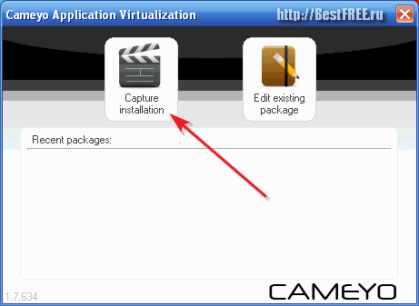
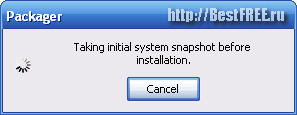
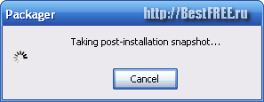
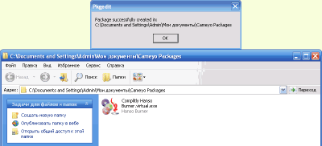
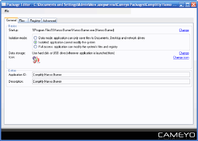
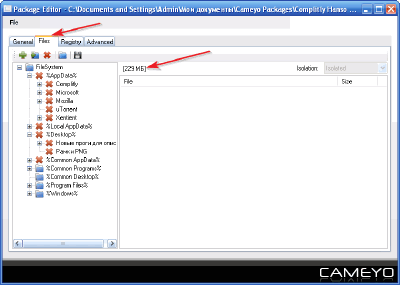
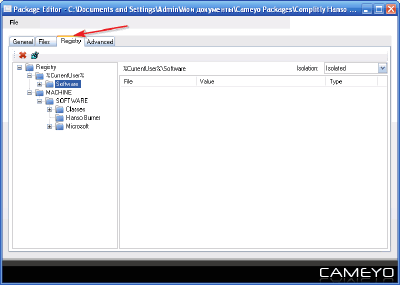
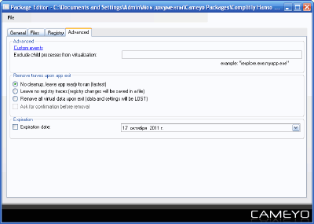

Окно записи процесса инсталляции в программе для создания портативного софта Cameyo
Окно записи процесса инсталляции в программе для создания портативного софта Cameyo Создание portable-программ — бесплатная программа
Руслан Богданов
9-13 минут
Программа для создания portable-версий (переносимых) программ из обычных версий программ, которые требуют установки на компьютер.
Компьютер – это тот предмет, без которого сегодня практически нельзя обойтись. Однако сам по себе ПК – куча железок, которую делает по-настоящему полезной лишь умело подобранное программное обеспечение!
В предыдущей статье я рассказывал Вам, как сделать так, чтобы Ваши любимые программы всегда были с Вами. И вот сегодня я снова хочу коснуться данной темы.
Безусловно, виртуальная операционная система от MojoPac достаточно удобная штука, но она, как мы увидели, не лишена некоторых изъянов. Да и не каждому требуется большой набор приложений для повседневной работы.
Чаще всего для полного счастья нам нужна одна-две программки :). Если Вы придерживаетесь такой минималистической точки зрения, тогда Вашим выбором должен стать portable-софт.
По сути, портативные приложения это те же программы, которыми Вы привыкли пользоваться в повседневности, но независимые от компонентов системы, на которой запускаются и не требующие установки. Соответственно мы можем запускать их на любом компьютере с любого носителя информации (сегодня чаще всего флешки).
Преимущества portable-софта
Не так давно portable-версии нужного софта можно было создать только вручную на «чистой» или виртуальной ОС. Приходилось делать снимки реестра до и после установки, затем сличать их и (опять же вручную) собирать в кучу все файлы и ключи реестра, которые изменились…
Однако уже сегодня существуют приложения, позволяющие полностью автоматизировать сей долгий и нудный процесс! Хочу познакомить Вас с программой Cameyo. На данный момент это практически единственная в своем роде система виртуализации, позволяющая полностью автоматизировать процесс сборки portable-версий любых приложений.
По своим возможностям она конкурирует с коммерческим продуктом компании SPOON – SpoonStudio:
Сравнение программы Cameyo с платным аналогом Spoon Studio
|
Особенности |
Cameyo |
Spoon Studio |
|
Стоимость |
бесплатно |
от $120/год или $2000!!! О_о |
|
Автоматическое создание portable-версий любых приложений |
+ |
+ |
|
Ручной режим правки собранного пака |
+ |
+ |
|
Настройка режима изоляции приложений |
+ |
+ |
|
Система предотвращения программных конфликтов |
- |
+ |
|
Настройка прав запуска в Windows 7 |
- |
+ |
|
Настройка даты истечения работоспособности приложения |
+ |
+ |
Как видим, Cameyo практически не уступает дорогостоящей коммерческой системе виртуализации. Более того, если Вы не желаете вникать в тонкости оптимизации полученного portable-приложения, то Cameyo будет Вашим лучшим выбором, поскольку предлагает пошаговую поддержку пользователя!
В Spoon Studio такая функция тоже имеется, однако в нашем бесплатном приложении интерфейс мастера намного удобнее, понятнее и ни разу не подразумевает двоякой трактовки!
Еще одним плюсом Cameyo является ее портативность и достаточно маленький для программы своей категории размер (всего 6,7 МБ – против 88,7 МБ у Spoon Studio).
Установка Cameyo
Запускать Cameyo можно прямо из архива, который Вы скачали.
Внимание! Перед запуском Cameyo желательно отключить Интернет и приложения, которые работают с ним и с файловой системой ПК! (это позволит максимально уменьшить изначальный размер исполняемого файла portable-приложения).
Внешний вид основного окна программы для создания portable-версий программ Cameyo
Интерфейс Cameyo
После запуска мы увидим окошко с двумя кнопками: «Capture installation» (что означает «Захватить процесс установки») и «Edit existing package» («Править существующие пакеты»). Поскольку у нас еще нет готовых проектов, нажимаем первую кнопку и в правом нижнем углу экрана увидим следующее сообщение:
Окно создания предварительного скриншота системы в программе для создания portable-софта Cameyo
Надпись в окошке означает буквально «Получение первоначального скриншота системы перед инсталляцией». Это первый этап создания нашего будущего portable-приложения. Cameyo в течении 3 – 5 минут собирает данные о таких компонентах системы, как реестр, системные папки и структура файлов.
Создание портабельной версии программы
По завершению этапа сбора информации мы переходим непосредственно к процессу установки нашего приложения:
Окно записи процесса инсталляции в программе для создания портативного софта Cameyo
На данной стадии мы инсталлируем нужное нам приложение и производим с ним все нужные предварительные настройки. По завершению установки нужно нажать кнопку «Install done» в окошке Cameyo. Если же установленная Вами программа требует перезагрузки, тогда жать ничего не надо – смело перезагружайтесь.
После подтверждения завершения инсталляции Cameyo приступит к третьему (и, по сути, последнему) шагу – сличению снимков системы:
Окно создания повторного скриншота системы в программе Cameyo
В информационном окошке Вы увидите, что Cameyo производит повторное сканирование системы и поиск изменившихся компонентов. После того, как разница между состоянием системы до и после установки приложения будет выявлена, Cameyo автоматически создаст исполняемый файл с полностью рабочей portable-версией только что установленного Вами приложения!
Сообщение об успешном завершении работы программы для создания portable Cameyo
Уменьшение размера созданной portable-программы
В принципе, мы добились поставленной цели – создали работоспособную портативную версию нужного приложения… Но не все так просто…
Дело в том, что чаще всего мы не можем гарантировать того, что на нашем ПК в фоновом режиме не функционируют какие-либо приложения, вносящие изменения в файловую систему. Поэтому окончательный размер исполняемого файла нашей portable-программы может иметь «избыточный вес» :).
Дабы избежать ненужных компонентов в созданном нами портативном приложении, откроем его при помощи Редактора пакетов Cameyo. Для этого снова вернемся к главному окну и теперь уже нажмем вторую кнопку – «Edit existing package». В открывшемся окне Проводника укажем созданное нами portable-приложение и попадем в следующее окошко:
Общие настройки проекта в программе Cameyo
Перед нами Редактор пакетов Cameyo. Он состоит из 4 вкладок, на каждой из которых мы можем произвести какие-либо действия с нашим портативным приложением. И первой вкладкой, которая открывается сразу при запуске Редактора, является «General». Это общие настройки нашего проекта. Здесь мы можем:
Во второй вкладке («Files») мы можем управлять файловой системой нашего portable-приложения:
Настройки файловой системы проекта в программе для создания portable-версий приложений Cameyo
Именно здесь мы можем максимально уменьшить размер созданной программы, удалив все заведомо ненужные компоненты. Также в этой вкладке мы можем и добавить нужные файлы (например, плагины) к нашему проекту.
Что характерно, сразу удаленные файлы и папки не удаляются, а только отмечаются красным крестиком. Их удаление произойдет после сохранения проекта. Однако я на практике столкнулся с некоторыми трудностями в этом процессе.
Некоторые файлы, похоже, не удаляются, а лишь скрываются, что никак не сказывается на размере конечного исполняемого файла :(. Поэтому еще раз повторюсь: во время создания каждого нового portable-приложения старайтесь чтобы на компьютере не работало сторонних программ!
Третья вкладка («Registry») позволяет править внутренний реестр портативного приложения:
Настройки реестра проекта в программе Cameyo
Здесь ненужные ветки удаляются без особых проблем, поэтому останавливаться на процессе очистки реестра не будем.
Тонкие настройки портативной программы
Последняя же вкладка («Advanced») предоставляет некие «продвинутые» функции настройки проекта:
Дополнительные настройки проекта в программе для создания portable-софта Cameyo
К таким функциям относятся:
Когда все необходимые правки будут Вами внесены, нужно будет сохранить наш проект. Для этого зайдите в меню «File» (верхний левый угол окна Редактора пакетов) и нажмите кнопку «Save».
Изменения будут сохранены в созданном ранее исполняемом файле. Если же Вы хотите немного поэкспериментировать, можете нажать кнопку «Save As» и сохранить исправленный проект как новый файл с другим названием и другими настройками.
Достоинства и недостатки Cameyo
Плюсы:
Минусы:
Выводы
Если Вам всегда нужно иметь под рукой несколько специфических программ для работы, но Вы не знаете, как сделать их портативные версии, то Cameyo именно тот инструмент, который поможет Вам справиться с Вашей проблемой.
Более того, недавно компания Cameyo запустила (и сейчас активно тестирует) он-лайн сервис виртуализации программ. Эту беспрецедентную разработку Вы можете найти по адресу: http://online.cameyo.com/submit.aspx.
Будьте мобильными ;). Почувствуйте полную свободу действий с самодельным portable-софтом!
P.S. Разрешается свободно копировать и цитировать данную статью при условии указания открытой активной ссылки на источник и сохранения авторства Руслана Тертышного.
P.P.S. Если Вы хотите, чтобы с вами был Ваш рабочий стол и набор установленных приложений, тогда Ваш выбор следует остановить на следующей программе:
Windows на флешке https://www.bestfree.ru/soft/file/windows-on-flash-drive.php